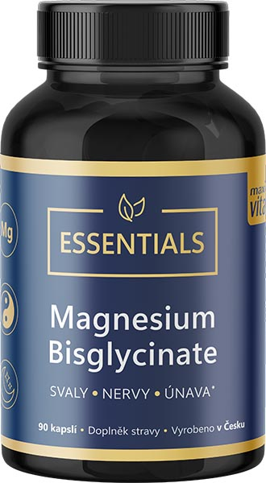
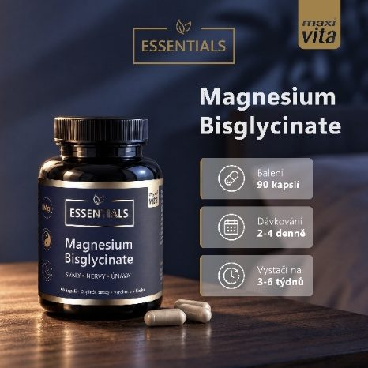
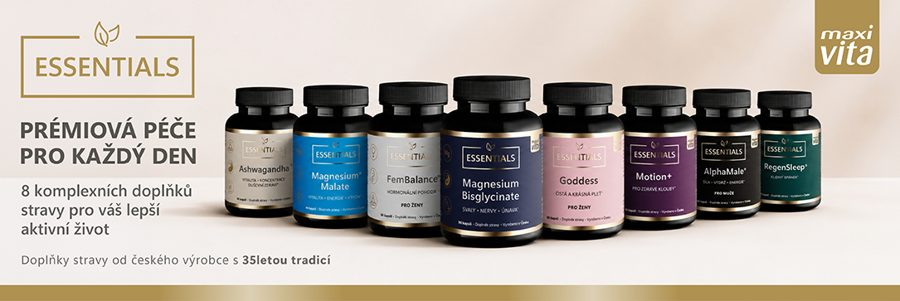

vitar.cz · Maxi Vita Essentials · ukázková produktová stránka · veřejná verze
Veřejná verze ukázkové produktové stránky pro vitar.cz. Ukazuje pořadí bloků a hotové texty. Rozvržení, komponenty a vizuální podobu navrhne Won Commerce. Údaje [doplní VITAR] se doplní před spuštěním. Fialové značky bloků nejsou součástí webu.
‹ Hořčík


4Maxi Vita Essentials
Doplněk stravy
Maxi Vita Essentials Magnesium Bisglycinate je doplněk stravy s hořčíkem ve formě bisglycinátu hořečnatého a vitaminem B6 ve formě pyridoxal-5′-fosfátu (P-5-P).
Hořčík přispívá k normální činnosti svalů.
Hořčík přispívá k normální činnosti nervové soustavy.
Hořčík přispívá ke snížení míry únavy a vyčerpání.
Tvrzení podle nařízení Komise (EU) č. 432/2012 · Všechna tvrzení ›
90 kapslí · 2–4 denně · 150 mg hořčíku ve 2 kapslích
Počet balení
Vystačí na 45 dní (při 2 kapslích denně) · Cena za denní dávku (2 kapsle): 5,53 Kč · Cena vč. DPH
{nejnizsi_cena} Kč · Nejnižší cena za posledních 30 dní před slevou: {nejnizsi_cena} Kč
Nejnižší cena, za kterou jsme výrobek nabízeli a prodávali v posledních 30 dnech před slevou. Uvádíme ji podle § 12a zákona o ochraně spotřebitele.
Hořčík přispívá k normální činnosti svalů. Hořčík přispívá k normální činnosti nervové soustavy. Vitamin B6 přispívá ke snížení míry únavy a vyčerpání.
Denní dávka 2 kapslí obsahuje obě živiny alespoň v množství 15 % RHP, které nařízení EU vyžaduje pro použití zdravotních tvrzení. Proto se k výrobku vztahují všechna tvrzení, která EU pro hořčík a vitamin B6 schválila:
Znění tvrzení podle nařízení Komise (EU) č. 432/2012, konsolidované znění ze 20. 8. 2025 (EUR-Lex). Zdroje najdete na konci stránky.
Pro dospělé, kteří chtějí doplnit hořčík a vitamin B6 v jednom výrobku. U každé karty je uvedeno, k čemu živiny přispívají.
Hořčík přispívá k normální činnosti svalů. Hořčík přispívá k normálnímu energetickému metabolismu.
Hořčík přispívá ke snížení míry únavy a vyčerpání. Vitamin B6 přispívá ke snížení míry únavy a vyčerpání.
Hořčík je minerální látka, kterou tělo přijímá z potravy a pití. Na etiketách se pro dospělé uvádí referenční hodnota příjmu (RHP) 375 mg denně.
Evropský úřad pro bezpečnost potravin (EFSA) uvádí jako přiměřený příjem 300 mg denně pro ženy a 350 mg pro muže. Hodnota 375 mg z etiket je jednotná referenční hodnota pro označování potravin podle nařízení (EU) č. 1169/2011.
Například v ořeších a semínkách, luštěninách, celozrnných obilovinách a zelené listové zelenině. doplní VITAR
V tabulce na etiketě se množství v mg i % RHP týká samotného hořčíku, ne celé sloučeniny.
Výrobek není určen jako náhrada pestré stravy.
Bisglycinát hořečnatý je sloučenina hořčíku s aminokyselinou glycinem: hořčík je v ní navázaný na dvě molekuly glycinu. Takové vazbě se říká chelátová, a proto se bisglycinát označuje také jako chelátový hořčík.
Hořčík najdete ve složení na etiketě jako bisglycinát hořečnatý. V tabulce je uvedený jako „hořčík (bisglycinát hořečnatý)“: 150 mg ve 2 kapslích (40 % RHP), tedy 75 mg v 1 kapsli.
Hořčík bisglycinát, bisglycinát hořečnatý, glycinát hořčíku i anglické magnesium bisglycinate jsou názvy téže formy hořčíku.
Vitamin B6 je v kapsli ve formě pyridoxal-5′-fosfátu (P-5-P). Pod tímto názvem ho najdete ve složení na etiketě.
Oba výrobky z řady Essentials, s bisglycinátem i s malátem hořečnatým, obsahují ve 2 kapslích stejné množství hořčíku, 150 mg. Liší se formou hořčíku a dalšími vitaminy.
Stejné u obou: 150 mg hořčíku (40 % RHP) a 1,4 mg vitaminu B6 (100 % RHP) ve 2 kapslích · 90 kapslí s rostlinným obalem (HPMC) · vystačí na 22–45 dní · {cena} Kč, tj. {cena za kapsli} Kč za kapsli a {cena za dávku} Kč za denní dávku 2 kapslí.
| Magnesium Malate | Magnesium Bisglycinate | |
|---|---|---|
| Forma hořčíku | malát hořečnatý (hořčík + kyselina jablečná) | bisglycinát hořečnatý (hořčík + glycin) |
| Další vitaminy | B1, B2, B3 (nikotinamid) | – |
| Tvrzení k vitaminům navíc (výběr) | Thiamin přispívá k normálnímu energetickému metabolismu. Riboflavin přispívá k normálnímu energetickému metabolismu. Niacin přispívá k normálnímu energetickému metabolismu. | – |
| Plnidlo v kapsli | inulin | mikrokrystalická celulóza |
| [Koupit] | Právě prohlížíte |
Tvrzení k hořčíku a vitaminu B6 jsou u obou výrobků stejná, protože obsahují stejné množství obou živin. Všechna tvrzení najdete v části „Na co je“.
V kapsli jsou dvě účinné látky, hořčík a vitamin B6, a dvě pomocné látky pro přesné plnění. Obal kapsle je z hydroxypropylmethylcelulózy (HPMC).
| Látka | Funkce | Proč |
|---|---|---|
| Stearan hořečnatý | protispékavá látka | Brání spékání a lepení prášku, aby se kapsle daly naplnit rovnoměrně. |
| Mikrokrystalická celulóza | plnidlo | Doplňuje obsah kapsle na potřebný objem, aby každá kapsle obsahovala stejné množství účinných látek. |
| Hydroxypropylmethylcelulóza (HPMC) | obal kapsle | Rostlinná kapsle vyrobená z celulózy. Neobsahuje želatinu. |
| Oxid zinečnatý | součást obalu kapsle |
Denní dávka 2 kapslí obsahuje 150 mg hořčíku (40 % RHP) a 1,4 mg vitaminu B6 (100 % RHP). Čtyři kapsle obsahují dvojnásobek.
| Účinná látka | 2 kapsle | % RHP | 4 kapsle | % RHP |
|---|---|---|---|---|
| hořčík (bisglycinát hořečnatý) | 150 mg | 40 % | 300 mg | 80 % |
| vitamin B6 (pyridoxal-5-fosfát) | 1,4 mg | 100 % | 2,8 mg | 200 % |
% referenční hodnoty příjmu (RHP) · svislá čára: 100 % RHP
RHP = referenční hodnota příjmu (v záhlaví tabulky jako <abbr title="referenční hodnota příjmu">RHP</abbr>, bez hvězdičky).
Vyšší příjem hořčíku může mít projímavé účinky.
Doplněk stravy. Není určeno pro děti do 18 let. Nepřekračujte doporučené denní dávkování. Výrobek není určen jako náhrada pestré stravy. Dbejte na vyváženou pestrou stravu a zdravý životní styl. Ukládejte mimo dosah dětí.
Uvádíme povinné údaje z etikety výrobku. Pokud se liší, platí údaje na obalu výrobku, který jste obdrželi.
| Parametr | Hodnota |
|---|---|
| Značka | Maxi Vita Essentials |
| Výrobce | VITAR, s.r.o. |
| Kód | 42300601 |
| EAN | 8595011149258 |
| Forma | kapsle |
| Obal kapsle | rostlinný (hydroxypropylmethylcelulóza, HPMC) |
| Balení | 90 kapslí |
| Doporučená denní dávka | 2–4 kapsle |
| Hořčík v denní dávce | 150–300 mg (40–80 % RHP) |
| Hořčík v 1 kapsli | 75 mg |
| Vitamin B6 v denní dávce | 1,4–2,8 mg (100–200 % RHP) |
| Vystačí na | 22–45 dní |
| Určeno pro | dospělé |
| Cukry | bez cukrů |
| Země výroby | Česká republika |
| Skladování | v suchu, 5–25 °C |
Dospělí užívají 2–4 kapsle denně a zapíjejí je dostatečným množstvím vody. Kdy během dne kapsle užijete, je na vás.
1 balení vystačí na 45 dní · 5,53 Kč na den
1 balení vystačí na 22 dní
Vyšší příjem hořčíku může mít projímavé účinky.
Vyšší dávku 4 kapslí rozdělte do dvou dávek po 2 kapslích, například 2 kapsle ráno a 2 kapsle večer.
Užíváte i jiné doplňky stravy s hořčíkem nebo vitaminem B6? Sečtěte si celkový denní příjem a dodržujte doporučené dávkování každého výrobku.
Při 2 kapslích denně vystačí jedno balení na 45 dní, při 4 kapslích na 22 dní.
| 2 kapsle denně | 4 kapsle denně | |
|---|---|---|
| 1 balení (90 kapslí) | 45 dní | 22 dní |
| 2 balení (180 kapslí) | 90 dní | 45 dní |
| 3 balení (270 kapslí) | 135 dní | 67 dní |
| Cena za den | 5,53 Kč | 11,07 Kč |
| Cena za 30 dní | 166 Kč | 332 Kč |
Magnesium Bisglycinate vyrábí česká rodinná firma VITAR, s.r.o., která vznikla v roce 1990. Sídlo má ve Zlíně, výrobní závod v Tišnově nedaleko Brna.
Maxi Vita Essentials je jedna z řad, které VITAR sám vyvíjí i vyrábí.
Kvalitu hlídáme v šesti krocích: od vývoje receptury přes výrobu až po kontroly na trhu. Kontroly jsou interní i externí.
Recepturu a dávky navrhuje naše oddělení vývoje a legislativy.
Recepturu a dávky navrhuje naše oddělení vývoje a legislativy. Před uvedením na trh výrobek oznamujeme Ministerstvu zemědělství, včetně složení a textů etikety, jak to zákon ukládá všem výrobcům doplňků stravy.
Suroviny a primární obaly kontrolujeme při příjmu.
Všechny suroviny i obaly, které jsou v přímém kontaktu s kapslemi, procházejí vstupní kontrolou kvality. Suroviny musí mít certifikáty jakosti, dodavatele pravidelně hodnotíme a namátkově u nich provádíme audity.
Mícháme, plníme a balíme v závodě s certifikací FSSC 22000.
Míchání, plnění kapslí a balení probíhají v našem závodě v Tišnově, který má certifikaci FSSC 22000.
Laboratoř v závodě kontroluje každý stupeň výroby.
Laboratoř přímo v závodě hlídá všechny fáze výroby, od příjmu surovin až po výstupní kontrolu.
Výrobky uváděné na trh procházejí mikrobiologickým a chemickým rozborem.
U výrobků, které uvádíme na trh, se provádí mikrobiologický a chemický rozbor, případně i stanovení obsahu účinných látek. Množství deklarovaných účinných látek kontrolujeme podle interních pravidel. Zdravotní nezávadnost ověřujeme ve spolupráci s akreditovanou laboratoří.
Na trhu nás kontroluje SZPI a výrobky testují i spotřebitelské organizace.
Doplňky stravy všech výrobců kontroluje Státní zemědělská a potravinářská inspekce (SZPI), namátkově i na podnět zákazníka. Naše výrobky testují i spotřebitelské organizace. Takových kontrol máme obvykle kolem 10 ročně. doplní VITAR
Výrobní závod v Tišnově má certifikaci FSSC 22000 pro bezpečnost potravin, platnou do 22. 5. 2029.
Mezinárodní certifikace, která ověřuje, jak výrobce řídí bezpečnost potravin. Uznává ji Globální iniciativa pro bezpečnost potravin (GFSI) a součástí jsou i neohlášené audity.
Pro vás to znamená, že výrobu v Tišnově pravidelně prověřuje nezávislý certifikační orgán podle mezinárodních pravidel bezpečnosti potravin.
VITAR je od roku 2016 signatářem Charty kvality ČR. Charta je součástí aktivit Národní politiky kvality v rámci Rady kvality České republiky.
Pro vás to znamená veřejný závazek VITARu prosazovat kvalitu české výroby.
Certifikace se týká výrobního závodu a jeho systému řízení, ne jednotlivého výrobku.
Magnesium Bisglycinate je doplněk stravy s hořčíkem a vitaminem B6 pro dospělé. Hořčík přispívá k normální činnosti svalů. Hořčík přispívá k normální činnosti nervové soustavy. Vitamin B6 přispívá ke snížení míry únavy a vyčerpání. Všechna schválená tvrzení najdete v části „Na co je“.
Dospělí užívají 2–4 kapsle denně a zapíjejí je dostatečným množstvím vody. Dvě kapsle obsahují 150 mg hořčíku (40 % RHP) a 1,4 mg vitaminu B6 (100 % RHP); kdy během dne je užijete, je na vás. Vyšší dávku 4 kapslí rozdělte do dvou dávek po 2 kapslích. Vyšší příjem hořčíku může mít projímavé účinky. Nepřekračujte doporučené denní dávkování.
Magnesium Bisglycinate můžete užívat kdykoli během dne. Důležité je dodržet doporučené denní dávkování 2–4 kapsle.
Kapsle můžete užívat s jídlem i nalačno. Vždy je zapijte dostatečným množstvím vody.
Jedna kapsle obsahuje 75 mg hořčíku a 0,7 mg vitaminu B6. Doporučená denní dávka jsou 2–4 kapsle, tedy 150–300 mg hořčíku (40–80 % RHP) a 1,4–2,8 mg vitaminu B6 (100–200 % RHP).
Ano, jde o zaměnitelné názvy téže formy hořčíku. Bisglycinát hořečnatý, anglicky magnesium bisglycinate, se označuje také jako hořčík bisglycinát nebo zkráceně glycinát hořčíku. Je to hořčík navázaný na dvě molekuly aminokyseliny glycinu; této vazbě se říká chelátová.
Vitamin B6 je druhá účinná látka výrobku: dvě kapsle obsahují 1,4 mg, tedy 100 % RHP. Je ve formě pyridoxal-5′-fosfátu (P-5-P). Vitamin B6 přispívá k normální činnosti nervové soustavy. Vitamin B6 přispívá ke snížení míry únavy a vyčerpání.
Oba obsahují ve 2 kapslích 150 mg hořčíku. Magnesium Bisglycinate obsahuje hořčík ve formě bisglycinátu hořečnatého a vitamin B6. Magnesium Malate obsahuje hořčík ve formě malátu hořečnatého a vitaminy B1, B2, B3 a B6.
Balení 90 kapslí vystačí na 45 dní při 2 kapslích denně a na 22 dní při 4 kapslích denně. Denní dávka 2 kapslí vychází na {cena_za_den_2} Kč, dávka 4 kapslí na {cena_za_den_4} Kč (při ceně {cena} Kč za balení).
Dodržujte doporučené denní dávkování 2–4 kapsle a nepřekračujte ho.
Pokud užíváte více doplňků stravy, sečtěte si, kolik hořčíku a vitaminu B6 denně přijímáte ze všech, a u každého výrobku dodržujte jeho doporučené dávkování.
Výrobek není určen pro děti do 18 let.
Cukry neobsahuje. Obal kapsle je rostlinný, z hydroxypropylmethylcelulózy (HPMC). Úplné složení najdete v části „Složení“. doplní VITAR
Jsou to pomocné látky, díky kterým se kapsle plní přesně. Stearan hořečnatý brání tomu, aby se prášek spékal a lepil. Mikrokrystalická celulóza je plnidlo, které doplní obsah kapsle na potřebný objem.
Vyrábí ho česká firma VITAR, s.r.o., ve svém závodě v Tišnově, který má certifikaci FSSC 22000. Suroviny kontrolujeme při příjmu, laboratoř kontroly kvality hlídá výrobu až po výstupní kontrolu a u výrobků uváděných na trh se provádí mikrobiologický a chemický rozbor. Podrobnosti najdete v části „Kvalita“.
Samotného hořčíku. Na etiketě uvádíme množství hořčíku, ke kterému se vztahuje referenční hodnota příjmu (RHP): 150 mg ve 2 kapslích, tedy 40 % RHP. Sloučenina bisglycinát hořečnatý váží víc, protože hořčík tvoří jen část její hmotnosti. Při srovnání výrobků proto porovnávejte množství hořčíku v denní dávce a jeho % RHP.
Hořčík je v doplňcích stravy vždy navázaný na jinou látku. Běžné jsou například oxid, uhličitan, citrát, malát a bisglycinát hořečnatý. Formy se liší tím, na co je hořčík navázaný, a tedy i tím, jaký podíl hořčíku sloučenina obsahuje. V Magnesium Bisglycinate je hořčík ve formě bisglycinátu, v Magnesium Malate ve formě malátu; další hořčíky VITAR najdete v části „Hledáte jiný hořčík?“.
V suchu při teplotě od 5 °C do 25 °C v dobře uzavřeném obalu, mimo dosah dětí.
Kapsle mají velikost doplní VITAR.
Nenašli jste odpověď? Napište nám na doplní VITAR nebo zavolejte na doplní VITAR.
Hořčík nabízíme i v jiných formách a baleních. Vyberte podle toho, jak ho chcete užívat.
Hořčík ve formě malátu hořečnatého s vitaminy B1, B2, B3 a B6.
249 Kč 2,77 Kč za kapsli
Hořčík v prášku, který se nasype přímo do úst a nechá rozpustit, s vitaminy B6 a C.
od 149 Kč {cena / 20} Kč za sáček
Šumivá tableta k rozpuštění ve vodě.
od 87 Kč {cena / 20} Kč za tabletu

Maxi Vita Essentials je řada doplňků stravy české firmy VITAR. U každého výrobku najdete na jeho stránce úplné složení, dávkování a informace o kvalitě. doplní VITAR
249 Kč 4,15 Kč za kapsli
199 Kč 3,32 Kč za kapsli
299 Kč 3,32 Kč za kapsli
199 Kč 3,32 Kč za kapsli
249 Kč 4,15 Kč za kapsli
Obsah zkontrolovalo oddělení vývoje a legislativy společnosti VITAR dne {datum}.
Klikněte na číslo bloku a skica na něj skočí.
| Blok | Název | Povinnost | Typ obsahu |
|---|---|---|---|
| B01 | Drobečková navigace | povinný blok pro všechny produkty | navigace (odkazy) + JSON-LD BreadcrumbList |
| B02 | Galerie | povinný blok pro všechny produkty | obrázky 1:1, lightbox se zoomem |
| B03 | Hlavička produktu | povinný blok pro všechny produkty | H1 (značka jako menší první řádek, volitelně krátký podtitul) + řádek „Doplněk stravy“ + tagy (chips jen na desktopu) |
| B04 | Klíčová fakta | povinný blok pro všechny produkty | K3 – 4 dlaždice s ikonou, nebo 1 řádek s oddělovači |
| B05 | Krátký popis (perex) | povinný blok pro všechny produkty | K4 – 1–2 věty, max. 160 znaků |
| B06 | Benefity se schváleným zněním | povinný blok pro všechny produkty | K3 – 3 dlaždice (ikona + nadpis + přesné tvrzení); na mobilu B06 kompakt (3 řádky) |
| B07 | Volba balení a cena | povinný blok pro všechny produkty | K12 – karty variant (1 / 2 / 3 balení), cena, cena za kapsli, vystačí na |
| B08 | Nákup a doručení (CTA) | povinný blok pro všechny produkty | K12 – množství, tlačítko, dostupnost, doručení |
| B09 | Pás důvěry | povinný blok pro všechny produkty | K3 – 4 položky s ikonou, celá položka je odkaz na detail |
| B11 | Kotvová lišta | povinný blok pro všechny produkty | navigace (sticky), scrollspy |
| B12 | Sticky mini CTA | povinný blok pro všechny produkty | K12 – mini lišta (ne celý nákupní blok) |
| B13 | Na co je: schválená tvrzení | povinný blok pro všechny produkty | K3 (skupiny s ikonou) + K9 (další tvrzení sbalená, obsah v DOM) |
| B14 | Pro koho je | zobrazí se jen s daty | K3 – karty person + pruh „Pro koho není“ |
| B15 | Živina v kostce: hořčík | zobrazí se jen s daty | K1 (body s ikonou) |
| B16 | Forma hořčíku: bisglycinát a P-5-P | šablona obecná, obsah jen pro tento produkt | K11 (SVG diagram s popisky v HTML) + K3 (3 číslovaná fakta) + K4 (na čem závisí využití hořčíku, otevřeně o surovině) |
| B17 | Srovnání: Bisglycinate, nebo Malate | zobrazí se jen s daty | K6 – srovnávací tabulka produktů (jen rozdíly) s řádkem „Stejné u obou“ a CTA v každém sloupci |
| B18 | Co je v kapsli a proč | zobrazí se jen s daty | K3 (karty účinných látek) + K4 (seznam pomocných látek) + pruh |
| B19 | Obsah v denní dávce: tabulka a graf % RHP | povinný blok pro všechny produkty | K5 (tabulka) + K7 (graf z pruhů s přepínačem 2 / 4 kapsle) |
| B20 | Povinné informace (etiketa) | povinný blok pro všechny produkty | K4 + rámeček s upozorněním |
| B21 | Parametry produktu | povinný blok pro všechny produkty | K5 – tabulka klíč–hodnota (<dl> nebo <table>) |
| B22 | Jak užívat | povinný blok pro všechny produkty | K3 (2 karty dávek) + K8 (denní osa) + K1 (tipy) |
| B23 | Na jak dlouho vystačí | zobrazí se jen s daty | K5 (tabulka) + K8 (osa zásoby) |
| B24 | Kdo vyrábí (Proč VITAR) | zobrazí se jen s daty | K2 (foto + perex) + K3 (4 fakta) |
| B25 | Cesta kvality | zobrazí se jen s daty | K8 – 6 kroků: ikona, nadpis, jedna krátká věta, rozbalovací „Více“ s plným textem |
| B26 | Certifikáty | zobrazí se jen s daty | K3 (karty) + PDF |
| B29 | Časté otázky | povinný blok pro všechny produkty | K9 – accordion (obsah v DOM) + JSON-LD FAQPage |
| B31 | Alternativy | zobrazí se jen s daty | K10 – 3 karty s jednou větou o formě a užití |
| B32 | Řada Maxi Vita Essentials | povinný blok pro všechny produkty | K4 (perex řady) + K10 (karusel) |
| B33 | Zdroje a kontrola obsahu | zobrazí se jen s daty | K9 – sbalený accordion (obsah v DOM) |